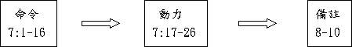

|
持
得
豐
盛
之
關
鍵 |
|||||
|
勇敢踏上 |
謹守遵行 |
選擇上好 |
追念失敗 |
得蒙賜福 |
效法神僕 |
|
１－３ |
４－２６ |
２７－３０ |
３１－３２ |
３３ |
３４ |
2.謹守遵行的重點(5-11)
A.內容的重點：西乃之約(5:1-22)
B.內心的重點：敬神愛神(5:23-11:32)
b.敬畏真神的表現(6:10-10:22)
(4)趕出惡民(7-10)
〜結構：

〜多「趕出」「滅絕」「毀滅」等類似字眼
「耶和華你神領你進入要得為業之地，從你面前趕出許多國民，就是赫人、革迦撒人、亞摩利人、迦南人、比利洗人、希未人、耶布斯人，共七國的民，都比你強大。」7:1
「你若心裡說，這些國的民比我更多，我怎能趕出他們呢？」7:17
「你今日當知道，耶和華你的神在你前面過去，如同烈火，要滅絕他們，將他們制伏在你面前。這樣，你就要照耶和華所說的趕出他們，使他們速速滅亡。耶和華你的神將這些國民從你面前攆出以後，你心裡不可說：『耶和華將我領進來得這地是因我的義。』其實，耶和華將他們從你面前趕出去是因他們的惡。」9:3-4
(A)滅絕的命令(7:1-16)
(a)其命令
「耶和華你神領你進入要得為業之地，從你面前趕出許多國民，就是赫人、革迦撒人、亞摩利人、迦南人、比利洗人、希未人、耶布斯人，共七國的民，都比你強大。耶和華你神將他們交給你擊殺，那時你要把他們滅絕淨盡，不可與他們立約，也不可憐恤他們。」7:1-2
〜要將住在迦南地的七國滅絕淨盡
(b)其困難
((1))道理上似乎不通
〜為何要滅絕呢？和平共處不是幾好的嗎？
((2))感情上似乎難行
〜要「滅絕淨盡」，即要殺他們，有男有女的，怎能不「憐恤」呢？
((3))實際上更沒可能
〜他們「都比你強大」，要滅絕他們，談何容易呢？
((4))物質上實在吸引
〜迦南地中，有很多人、很多物實在吸引，若滅絕淨盡會否可惜呢？
(c)其原因
((1))神絕對主權
〜這是神的命令，萬物是從神來的，祂有主權掌管生命
((2))該得的報應
「耶和華對亞伯蘭說：「你要的確知道，你的後裔必寄居別人的地，又服事那地的人；那地的人要苦待他們四百年。」」創15:13
「到了第四代，他們必回到此地，因為亞摩利人的罪孽還沒有滿盈。」
創15:16
「免得他們教導你們學習一切可憎惡的事，就是他們向自己神所行的，以致你們得罪耶和華你們的神。」申20:18
「你進去得他們的地，並不是因你的義，也不是因你心裡正直，乃是因這些國民的惡，耶和華你的神將他們從你面前趕出去，又因耶和華要堅定他向你列祖亞伯拉罕、以撒、雅各起誓所應許的話。」申9:5
「你臨近一座城、要攻打的時候，先要對城裡的民宣告和睦的話。他們若以和睦的話回答你，給你開了城，城裡所有的人都要給你效勞，服事你；若不肯與你和好，反要與你打仗，你就要圍困那城。耶和華你的神把城交付你手，你就要用刀殺盡這城的男丁。惟有婦女、孩子、牲畜，和城內一切的財物，你可以取為自己的掠物。耶和華你神把你仇敵的財物賜給你，你可以吃用。」申20:10-14
「只要照耶和華你神所吩咐的將這赫人、亞摩利人、迦南人、比利洗人、希未人、耶布斯人都滅絕淨盡。」申20:17
〜住在迦南地的民族，其實從創世記開始已得罪神，拜偶像，行神所憎惡之事，但神仍給他們時間，寬容他們，但直到申命記時代，他們已積畜神很大的忿怒，整群已是惡的，所以該受報應。
〜若留意申20，神非殘忍，對待其它民族，先求和陸，即使攻擊，也不殺婦孺，但因這七個國民實在太惡，所以才受神的嚴厲管教。
((3))分別的身份
「因為你歸耶和華你神為聖潔的民；耶和華你神從地上的萬民中揀選你，特作自己的子民。耶和華專愛你們，揀選你們，並非因你們的人數多於別民，原來你們的人數在萬民中是最少的。」7:6-7
〜以色列民是神所揀選的子民，是聖潔的民「聖潔」即分別出來，神要建立一個民族，是要和偶像、罪惡、分別的，選民因有這身份，所以不能與不潔的民混雜。
((4))真神的好意
「因為他必使你兒子轉離不跟從主，去事奉別神，以致耶和華的怒氣向你們發作，就速速地將你們滅絕。」申7:4
「耶和華你神所要交給你的一切人民，你要將他們除滅；你眼不可顧惜他們。你也不可事奉他們的神，因這必成為你的網羅。」申7:16
〜神知道選民的本性，強如所羅門，也因外邦女子，被迷惑而拜偶像，若選民真與惡民同住，必受他們影響，敬拜偶像，行惡得罪神，惡民必成為選民的網羅。
((5))日後的印証
「及至以色列強盛了，就使迦南人做苦工，沒有把他們全然趕出。」士1:28
「以色列人行耶和華眼中看為惡的事，去事奉諸巴力，離棄了領他們出埃及地的耶和華他們列祖的神，去叩拜別神，就是四圍列國的神，惹耶和華發怒；
並離棄耶和華，去事奉巴力和亞斯他錄。耶和華的怒氣向以色列人發作，就把他們交在搶奪他們的人手中，又將他們付與四圍仇敵的手中，甚至他們在仇敵面前再不能站立得住。」士2:11-14
(d)其內容
((1))徹底淨盡
「這城和其中所有的都要在耶和華面前毀滅．．．．」書6:17
「以色列人在田間和曠野殺盡所追趕一切艾城的居民。艾城人倒在刀下，直到滅盡；以色列眾人就回到艾城，用刀殺了城中的人。當日殺斃的人，連男帶女共有一萬二千，就是艾城所有的人。」書8:24-25
「這樣，約書亞擊殺全地的人，就是山地、南地、高原、山坡的人，和那些地的諸王，沒有留下一個。將凡有氣息的盡行殺滅，正如耶和華以色列的神所吩咐的。」書10:40
((2))沒何關係
「耶和華你神將他們交給你擊殺，那時你要把他們滅絕淨盡，不可與他們立約，也不可憐恤他們。不可與他們結親。不可將你的女兒嫁他們的兒子，也不可叫你的兒子娶他們的女兒。」申7:2-3
「你們和不信的原不相配，不要同負一軛。義和不義有什麼相交呢？光明和黑暗有什麼相通呢？基督和彼列（彼列就是撒但的別名）有什麼相和呢？信主的和不信主的有什麼相干呢？神的殿和偶像有什麼相同呢？因為我們是永生神的殿，就如神曾說：我要在他們中間居住，在他們中間來往；我要作他們的神；他們要作我的子民。又說：你們務要從他們中間出來，與他們分別；不要沾不潔淨的物，我就收納你們。」6:14-17
〜不立約，不結親，表明選民與惡民不能建立任何關係，新約更表明不相配，不能相交，是沒有相干的！
〜新舊約也強調信與不信，與拜偶像的不能同負一軛的！
((3))憎厭不潔
「你們卻要這樣待他們：拆毀他們的祭壇，打碎他們的柱像，砍下他們的木偶，用火焚燒他們雕刻的偶像。」申7:5
「他們雕刻的神像，你們要用火焚燒；其上的金銀，你不可貪圖，也不可收取，免得你因此陷入網羅；這原是耶和華你神所憎惡的。可憎的物，你不可帶進家去；不然，你就成了當毀滅的，與那物一樣。你要十分厭惡，十分憎嫌，因為這是當毀滅的物。」」申7:25-26
〜對不潔，神看為可憎之物，要厭惡、憎嫌、要打碎，焚燒！
(e)其結果
〜選民若行滅絕惡民的吩咐，會有以下結果
((1))得神施愛
「你們果然聽從這些典章，謹守遵行，耶和華你神就必照他向你列祖所起的誓守約，施慈愛。」7:12
((2))得神賜福
「他必愛你，賜福與你，使你人數增多，也必在他向你列祖起誓應許給你的地上賜福與你身所生的，地所產的，並你的五穀、新酒，和油，以及牛犢、羊羔。你必蒙福勝過萬民；你們的男女沒有不能生養的，牲畜也沒有不能生育的。」7:13-14
((3))得免災禍
「耶和華必使一切的病症離開你；你所知道埃及各樣的惡疾，他不加在你身上，只加在一切恨你的人身上。」7:15
(B)趕出的動力(7:17-26)
「你若心裡說，這些國的民比我更多，我怎能趕出他們呢？」申7:17
〜不要說「滅絕」，要「趕出」比他們強大而多的人，也十分難！但神要他們「不懼怕」只要
(a)牢記過往神的作為
「你不要懼怕他們，要牢牢記念耶和華你神向法老和埃及全地所行的事，就是你親眼所看見的大試驗、神蹟、奇事，和大能的手，並伸出來的膀臂，都是耶和華你神領你出來所用的。耶和華你神必照樣待你所懼怕的一切人民。」7:18-19
〜選民只要回憶神過往在埃及地所行的大能作為(新一代的選民有一些也曾看見)，就可以放心，強如埃及，神也能顯出祂的奇事、大能，何況住在迦南地的王呢！
(b)相信現今神的應許
((1))真神仍會工作
「就是你親眼所看見的大試驗、神蹟、奇事，和大能的手，並伸出來的膀臂，都是耶和華你神領你出來所用的。耶和華你神必照樣待你所懼怕的一切人民。並且耶和華你神必打發黃蜂飛到他們中間，直到那剩下而藏躲的人從你面前滅亡。」7:19-20
((2))真神仍會同在
「你不要因他們驚恐，因為耶和華你神在你們中間是大而可畏的神。」7:21
((3))真神仍有體恤
「耶和華你神必將這些國的民從你面前漸漸趕出；你不可把他們速速滅盡，恐怕野地的獸多起來害你。」7:22
((4))仇敵終被交出
「耶和華你神必將他們交給你，大大的擾亂他們，直到他們滅絕了。」7:23
(C)趕出後備註(8-10)
「你若忘記耶和華你的神，隨從別神，事奉敬拜，你們必定滅亡；這是我今日警戒你們的。耶和華在你們面前怎樣使列國的民滅亡，你們也必照樣滅亡，因為你們不聽從耶和華你們神的話。」申8:19-20
「耶和華你的神將這些國民從你面前攆出以後，你心裡不可說：『耶和華將我領進來得這地是因我的義。』其實，耶和華將他們從你面前趕出去是因他們的惡。」9:4
〜當神消滅外邦，子民趕出百姓後，他們要記得知道以下事情
(a)勿忘記耶和華你的神(8)
((1)) 勿忘神若煉
「你也要記念耶和華你的神在曠野引導你這四十年，是要苦煉你，試驗你，要知道你心內如何，肯守他的誡命不肯。他苦煉你，任你飢餓，將你和你列祖所不認識的嗎哪賜給你吃，使你知道，人活著不是單靠食物，乃是靠耶和華口裡所出的一切話。」8:2-3
*試驗他們的內心肯守神誡命與否
〜在曠野，有四十年不同的經歷，目的是要驗清他們對神誡命的態度，是頭腦的知識，一時的認真，還是真正肯持久受神的誡命，藉種種試驗，給他們更認識自己的本相，原來是悖逆，應更加努力靠神改過，沒甚麼可誇。
*苦煉他們認識人活著乃靠神的話
〜他們能否活著，不單是因有沒有嗎哪，更因有沒有行的活，能行時候，神使人活，不行，神卻會滅絕。
((2))勿忘神恩典
「你在那地不缺食物，一無所缺。那地的石頭是鐵，山內可以挖銅。你吃得飽足，就要稱頌耶和華你的神，因他將那美地賜給你了。」8:9-10
((3))勿忘神自已
「你要謹慎，免得忘記耶和華你的神，不守他的誡命、典章、律例，就是我今日所吩咐你的。」8:11
〜人為何易忘記神呢？忘記後有甚麼結果？
＊心高氣傲
「恐怕你吃得飽足，建造美好的房屋居住，你的牛羊加多，你的金銀增添，並你所有的全都加增，你就心高氣傲，忘記耶和華你的神，就是將你從埃及地為奴之家領出來的。」8:12-14
＊高舉己力
「恐怕你心裡說：『這貨財是我力量、我能力得來的。』你要記念耶和華你的神，因為得貨財的力量是他給你的，為要堅定他向你列祖起誓所立的約，像今日一樣。」8:17-18
＊隨從別神
「你若忘記耶和華你的神，隨從別神，事奉敬拜，你們必定滅亡；這是我今日警戒你們的。」8:19
＊遭神管教
「耶和華在你們面前怎樣使列國的民滅亡，你們也必照樣滅亡，因為你們不聽從耶和華你們神的話。」8:20